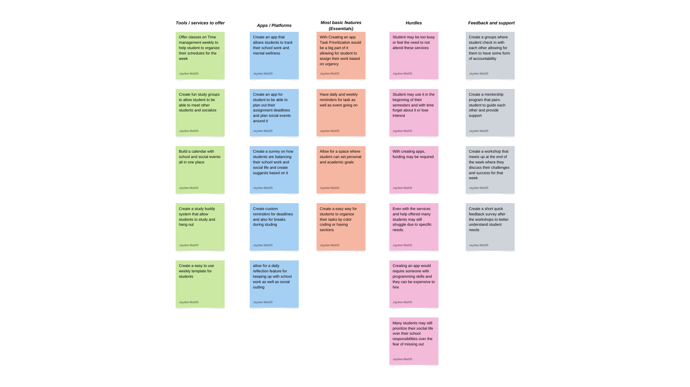

Problem Statement

Maintaining a balance between school responsibilities and social/ networking opportiuntuies can become difficult for many college students.
Affinity Diagram
Affinity diagram with 5 clusters and 20 ideas about trying to maintain a healthy balance between school work and maintaining a social life.